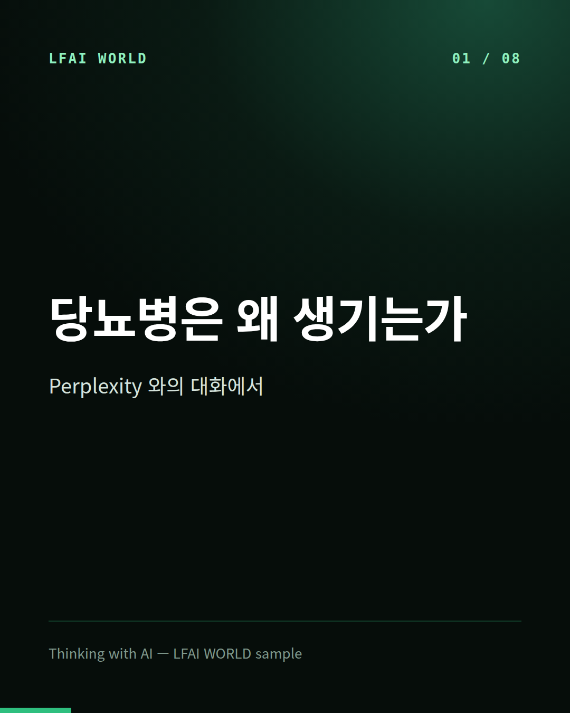
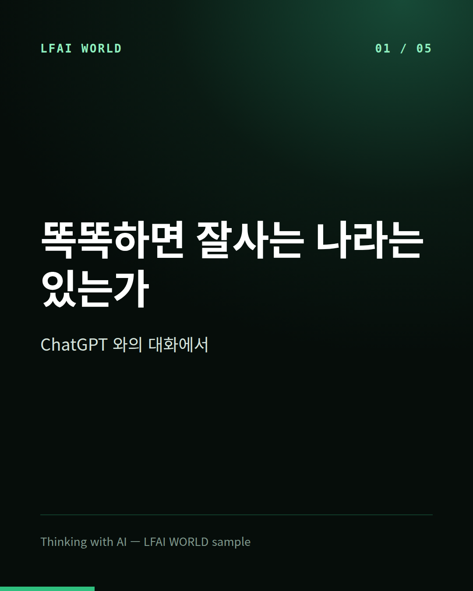
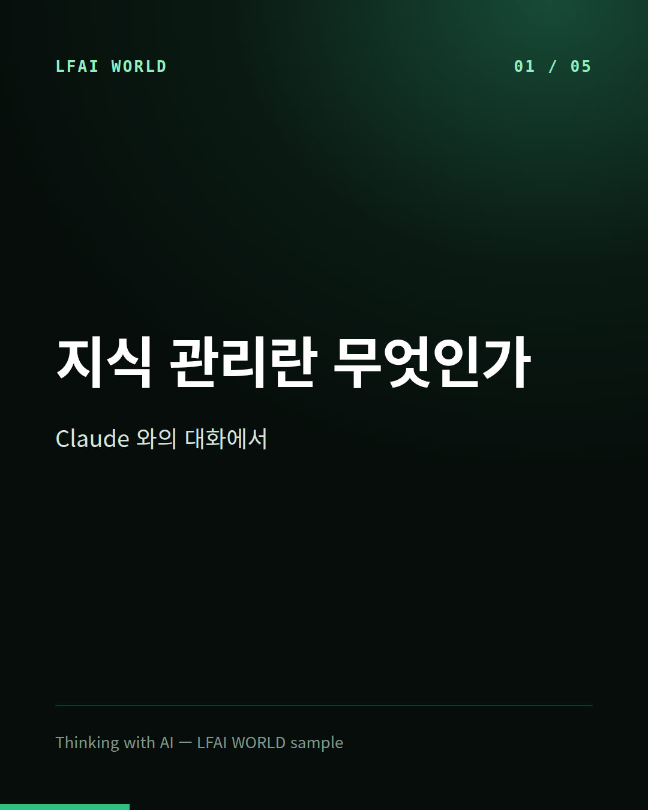
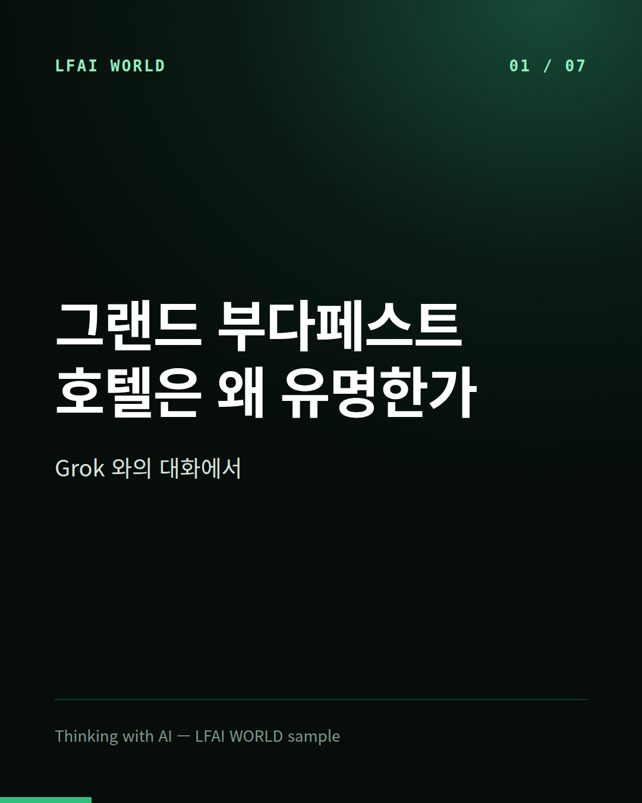
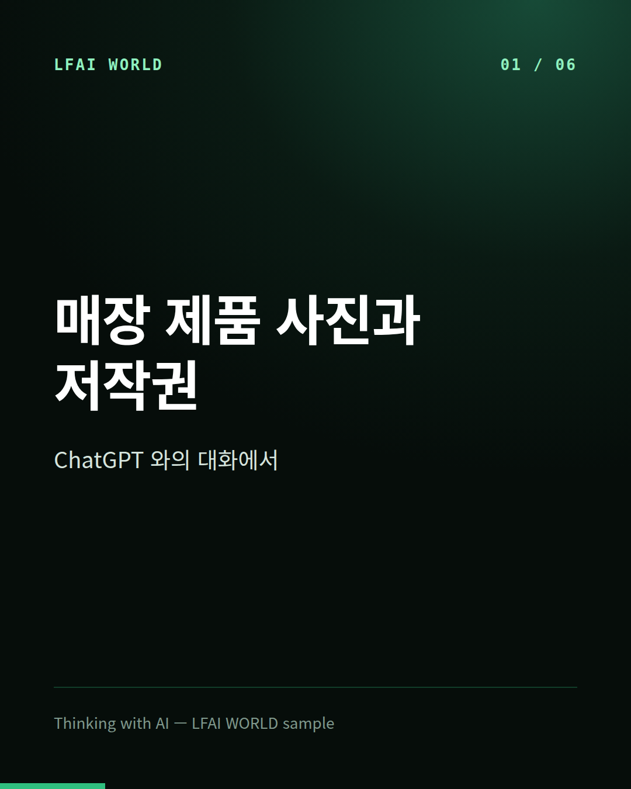

LFAI WORLD · 웹 책
Thinking with AI — LFAI WORLD sample
AI와 나눈 대화가 사람의 승인을 거쳐 책 · 카드 · 낭독 · 영상 · 교재가 됩니다. 홈 화면에 추가하면 앱처럼 열립니다.
 장비는 언제 사야 하나 — 새것과 중고, 속도와 가격ChatGPT · 카드 · 낭독 · 영상 · 교재
장비는 언제 사야 하나 — 새것과 중고, 속도와 가격ChatGPT · 카드 · 낭독 · 영상 · 교재
당뇨병은 왜 생기는가Perplexity · 카드 · 낭독 · 영상 · 교재
똑똑하면 잘사는 나라는 있는가ChatGPT · 카드 · 낭독 · 영상 · 교재
지식 관리란 무엇인가Claude · 카드 · 낭독 · 영상 · 교재
그랜드 부다페스트 호텔은 왜 유명한가Grok · 카드 · 낭독 · 영상 · 교재 취미로 프로그래밍한다는 말의 뜻Gemini · 카드 · 낭독 · 영상 · 교재
취미로 프로그래밍한다는 말의 뜻Gemini · 카드 · 낭독 · 영상 · 교재
매장 제품 사진과 저작권ChatGPT · 카드 · 낭독 · 영상 · 교재